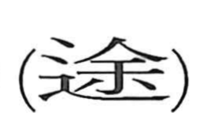

途

Kun: michi | On: to
way ・ road ・ route ・ path
Explanation
途 combines 辵, movement along a road, with 余 as its sound element. 余 pictures a large needle with a handle. Used as a ritual implement, it was thrust into the ground to remove harmful spirits thought to lurk beneath it. This purification of the way was called 除道.
涂 names the performance of such purification at a watercourse, while 途 applies it to a road. The resulting way has been cleared of the powers that might obstruct or endanger passage.
途 therefore means a road or route along which one can proceed. Its broader uses for a course or an undertaking continue the path made ready for movement.